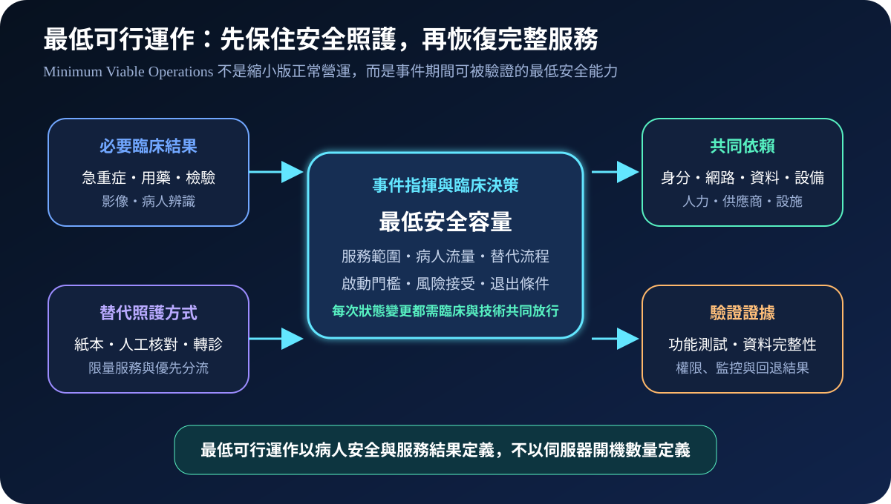
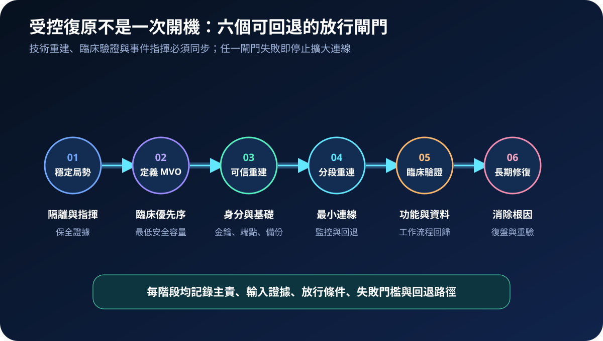
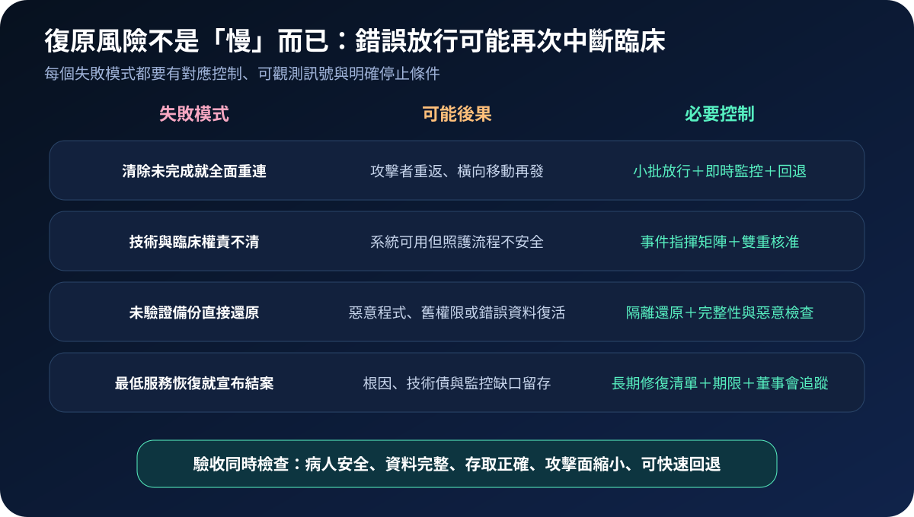

醫療資安國際觀察 · 2026-10-29
醫療機構遭重大網攻後如何恢復最低可行運作：從臨床優先序到受控重建
作者：Dr. William｜醫療資訊與資安治理實務工作者
重大網攻後，醫院不能只問系統何時全部恢復；第一個治理問題是哪些照護結果必須先以最低安全容量維持，並在可信基礎上逐步重連。
名詞解釋：最低可行運作不是縮小版正常營運
最低可行運作（Minimum Viable Operations, MVO）是組織在嚴重中斷期間仍須維持的最低活動與資源組合。醫療情境應由病人安全、急迫性與替代能力定義，例如急重症分流、病人辨識、用藥核對、必要檢驗及轉診協調。受控復原則把重建、重連、臨床驗證與回退設成分段閘門，避免「能開機」被誤認為「可安全照護」。
國際現況與適用邊界
英國 NCSC 於 2026 年發布並持續更新「破壞性網路攻擊」指引，將高階領導、危機回應、最低可行運作、重建重連及長期修復放在同一復原計畫。HHS ASPR TRACIE 於 2026 年發布醫療機構層級資安評估，協助盤點治理、識別、保護、偵測、應變與復原能力；NIST CSF 2.0 提供跨產業治理與復原成果架構。英國與美國資料不直接構成台灣醫療機構的法定通報時限、服務標準或核准程序。
台灣適用原則：可採用 MVO 與分段復原方法，但病歷、個資、醫療品質、事件通報、病人轉送及風險接受，仍須依台灣法令、主管機關要求、契約與院內權責確認。
規劃：以臨床服務結果建立恢復優先序
範圍宜先涵蓋急診、住院用藥、檢驗、影像、手術、加護及病人身分等高影響服務。每項服務應記錄最低容量、最大容忍中斷、必要資料、共同依賴、替代流程、決策主責、啟動門檻與退出條件。驗收指標可包含 MVO 覆蓋率、替代流程演練通過率、可信重建時間、分段重連失敗率、臨床回歸通過率及未結長期修復項目。
實作：六階段受控復原
- 穩定局勢：成立事件指揮、隔離受影響環境、保全證據並維持替代照護。
- 定義 MVO：依病人安全與區域容量確認必須先恢復的服務及最低容量。
- 可信重建：重建身分、金鑰、管理端點、網路基礎與隔離還原環境。
- 分段重連：以最小連線逐批放行，保留即時監控、停止門檻與回退路徑。
- 臨床驗證：共同確認功能、資料完整、權限、介接與實際工作流程。
- 長期修復：處理根因、技術債、未替換資產與治理缺口，持續追蹤至關閉。

風險：過早恢復可能製造第二次中斷
主要失敗模式包括清除未完成即全面重連、技術與臨床核准權責不清、未驗證備份直接還原，以及最低服務恢復後過早結案。控制重點是小批放行、隔離還原、雙重驗收、持續監控與長期修復清單。若資料完整性、病人辨識、用藥核對或回退能力仍不明確，服務不得只因設備已上線而宣告恢復。

可執行清單
- 高影響臨床服務是否已定義最低安全容量與最大容忍中斷？
- 替代流程是否涵蓋病人辨識、用藥、檢驗、轉診與資料回補？
- 重建環境是否與受影響管理身分、金鑰及端點隔離？
- 每批重連是否有臨床與技術共同核准、監控及回退門檻？
- 資料完整性、權限、介接及工作流程是否完成實際回歸測試？
- 長期修復是否有主責、期限、風險接受者與結案證據？
來源
- UK NCSC｜Guidance for organisations considering how to prepare for, manage, and recover from a severely disruptive cyber attack（發布：2026-06-30；更新：2026-09-29；查閱：2026-10-29）
- HHS ASPR TRACIE｜Health Care Facility-Level Cyber Assessment（發布：2026-09-22；查閱：2026-10-29）
- NIST｜Cybersecurity Framework 2.0（發布：2024-02-26；查閱：2026-10-29）
內容說明
本文依健康台灣深耕計畫相關治理內容整理，並參考英國 NCSC、美國 HHS 與 NIST 公開資料，提出最低可行運作、臨床優先序、可信重建、分段重連及長期修復方法；不把外國指引視為台灣法定義務，也不取代主管機關公告、院內醫療品質與病歷程序、事件指揮制度或法律意見。